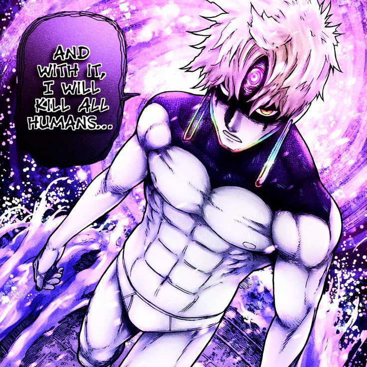

-
Okarun - Granny Turbo mode

Okarun era apenas um estudante nerd comum quando conheceu uma garota e foi amaldiçoado pela vovó turbo um dos mais poderosos yokais ganhando um físico e velocidade extrema além de poderes de se locomover como e na velocidade de uma onda eletromagnetica.
ATK/ 8500 DEF/ 5300 VEL/ 99999+ -
Jiji - Evil Eyes
Jiji é um atleta que tem sua casa assombrada por um yokai que o possui, tranformando-o em um ser com um poder gigantesco, podendo criar projeteis de energia em formato de bola, além de sua defesa e força física aprimoradas.
ATK/ 6300 DEF/ 6800 VEL/ 5890 -
Acrobatic Silky

Uma youkai que passou por um passado muito triste, tendo sua filha sequestrada e sua vida arruinada se suicidou se transformando em um yokai, é extremamente agilidosa, flexivel, rápida e forte, ela pode usar seu longos cabelos como arma, podendo se lançar segurar e até furar seus adversários com seus cabelos resistentes.
ATK/ 6900 DEF/ 6700 VEL/ 7900 -
Kashima Reiko

A yokai mais poderosa da obra até então, tem uma capacidade de absorver adversários e qualquer coisa que esteja sendo refletido pelo seu espelho, além de aumentar massa, volume e velocidade refletindo seus membros no espelho e afetando a realidade com suas proporções aumentada.
ATK/ 9700 DEF/ 7300 DEF/ 9500 -
Futa Zuma - Umbrella Boy
Futa Zuma era o irmão mais novo de Unji Zuma, usava botas de chuva como sua única escolha de calçado e sempre tinha um guarda-chuva ao seu lado. Após sua morte, seu espírito se tornou um yokai conhecido como Umbrella Boy, cujos poderes são compartilhados com Unji.
ATK/ 7100 DEF/ 5680 VEL/ 6800 -
Serpos
Os serponianos são alienígenas com tecnologia avançada, capazes de usar poderes psiquicos.
ATK/ 3500 DEF/ 2800 -
Kur
O Kur, um termo apelidado pelos Serpos, refere-se a uma raça alienígena militarista que se origina dos confins do espaço. Descritos como globalistas, eles têm buscado ativamente planetas dentro do sistema galáctico para conquistar.
ATK/ 5900-7320 DEF/ 5700-6300 DEF/ 3790-7900